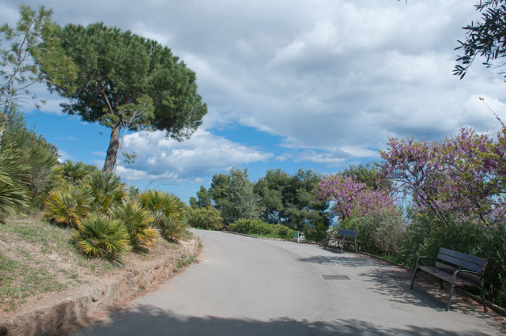
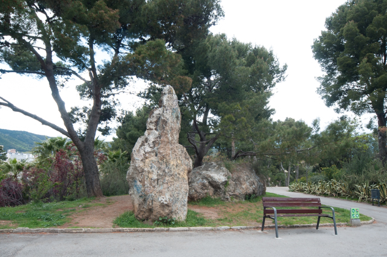
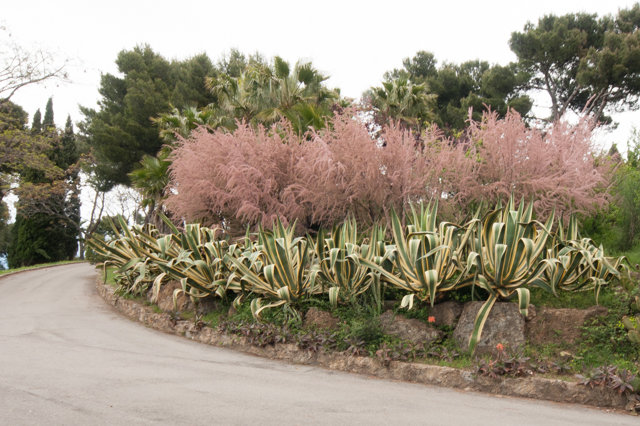

El barri del Turó de la Peira
El barri es disposa entorn del turó que li dóna nom. La part alta del turó és un parc urbà, en concret, el més antic del districte,
ja que data del 1936. Pertanyia a la finca de Can Peguera, i es tracta d’una frondosa pineda natural, coronada per un mirador i una
gran creu.
Al començament dels anys seixanta l’extensió del parc es va veure reduïda a causa de la ràpida construcció d’habitatges, arran d’un
pla parcial típic de l’època predemocràtica, que va projectar una urbanització sense serveis i habitatges de mala qualitat.
L’ensorrament d’un edifici, l’any 1990, per causa de l’aluminosi va ser la confirmació més contundent de les deficiències esmentades
i va resultar determinant a l’hora de conscienciar els ciutadans i les administracions de la necessitat d’endegar la remodelació
d’aquest barri i d’altres barris amb problemes similars.
Aleshores es van començar a renovar totalment o parcialment els habitatges de la zona. A tocar de Vilapicina hi ha el Mercat de
la Mercè, un dels espais aglutinadors de la vida del barri, com també ho és l’Espai Jove les Basses, un centre de referència per
als joves de Nou Barris on hi ha instal·lat el Punt d’Informació Juvenil del Districte, i el Centre Cívic Can Basté.
Recentment s’han reurbanitzat diversos carrers del barri, com el carrer de la Vall d’Ordesa, amb la qual cosa s’han millorat
l’accessibilitat i la mobilitat del barri. Actualment s’ha redactat el projecte de reforma de la piscina Turó, i també es preveu
remodelar la pista esportiva i l’entorn d’aquesta pista.

Parc del Turó de la Peira
Aquest parc és un luxe per als ciutadans que es mouen pel seu voltant. És un oasi amb una gran varietat vegetal que destaca dels
edificis que l'envolten pel seu verd i la seva privilegiada alçada i situació, circumstància que el converteixen en l'únic parc de
Barcelona que ofereix vistes tant a Collserola com al mar.
El del Turó de la Peira és un parc per passejar. També és un parc per contemplar les vistes des de qualsevol de les seves zones
d'estada, perquè els nens es diverteixin en algunes de les tres àrees de jocs infantils que hi ha i per fer pícnics o jugar a cartes
o a dominó sobre les taules que hi ha per tot el recinte. Però sobretot és un lloc per al passeig a través dels amplis camins que el
recorren en un itinerari que té com a objectiu principal arribar al cim, situat a uns 140 metres d'altitud, on es troba el mirador.
Qui no vulgui renunciar a l'exercici pot fer ús de les escales de pedra, que segueixen un traçat recte.

Història
El parc del Turó de la Peira s'estén sobre una superfície de 7,71 hectàrees que formaven part d'una antiga pedrera, propietat de
la marquesa de Castellvell. L'espai va passar a mans municipals durant la Segona República i es va inaugurar com a parc públic
l'any 1936, si bé s'hi van anar incorporant nous terrenys fins al 1977, any en què es va inaugurar la primera remodelació.
El 2007 es va fer una rehabilitació integral que en va restituir l'aspecte general i en va actualitzar les instal·lacions.

Vegetació
Si bé està qualificat com a parc urbà, té una part eminentment boscosa, on els pins tenen un protagonisme gairebé absolut. La gran
pineda, formada per pins blancs (Pinus halepensis) i pinyoners (Pinus pinea), inunda tot el parc, però es concentra especialment a
la zona forestal, situada al vessant nord.
A part dels pins, hi ha oliveres (Olea europaea), xiprers (Cupressus sempervirens) i para-sols de la Xina (Firmiana simplex). Per
contra, el vessant més de solell té un disseny més enjardinat i acull arbustos i més varietats vegetals, entre les quals destaquen
els grups de figueres de moro (Opuntia ficus-indica).
